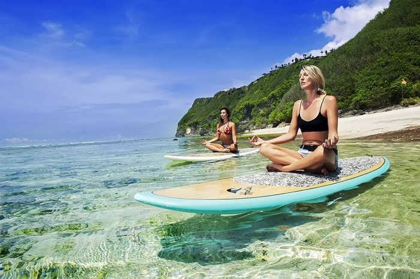
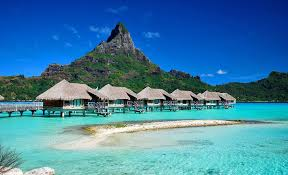
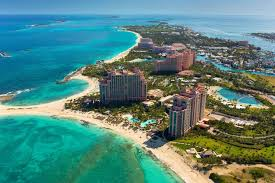
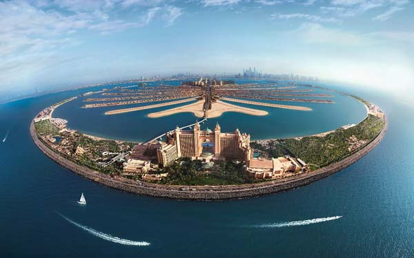
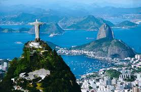

1.FOR YOUR EYES ONLY!
- Bali,Indonesia

Bali is an Indonesian island known for its forested volcanic mountains, iconic rice paddies, beaches and coral reefs. The island is home to religious sites such as cliffside Uluwatu Temple. To the south, the beachside city of Kuta has lively bars, while Seminyak, Sanur and Nusa Dua are popular resort towns. The island is also known for its yoga and meditation retreats.
- Bora Bora

Bora Bora is a small South Pacific island northwest of Tahiti in French Polynesia. Surrounded by sand-fringed motus (islets) and a turquoise lagoon protected by a coral reef, it’s known for its scuba diving. It's also a popular luxury resort destination where some guest bungalows are perched over the water on stilts. At the island's center rises Mt. Otemanu, a 727m dormant volcano.
- Carribean

The Caribbean is a region of The Americas that consists of the Caribbean Sea, its islands and the surrounding coasts. The region is southeast of the Gulf of Mexico and the North American mainland, east of Central America, and north of South America.
2. FOR YOUR SOUL
- The Eiffel Tower

The Eiffel Tower is a wrought-iron lattice tower on the Champ de Mars in Paris, France. It is named after the engineer Gustave Eiffel, whose company designed and built the tower
- The Palm Jumeirah

The tree-shaped Palm Jumeirah island is known for glitzy hotels, posh apartment towers and upmarket global restaurants. Food trucks offering snacks like shawarma dot the Palm Jumeirah Boardwalk, popular for its views of the Dubai coastline and the sail-shaped Burj Al Arab hotel. Beach clubs with spas and infinity pools turn into boisterous nightclubs with live DJs in the evening.
- Rio De Janeiro

Rio de Janeiro is a huge seaside city in Brazil, famed for its Copacabana and Ipanema beaches, 38mChrist the Redeemer statue atop Mount Corcovado and for Sugarloaf Mountain, a granite peak with cable cars to its summit. The city is also known for its sprawling favelas (shanty towns). Its raucous Carnaval festival, featuring parade floats, flamboyant costumes and samba dancers, is considered the world’s largest.